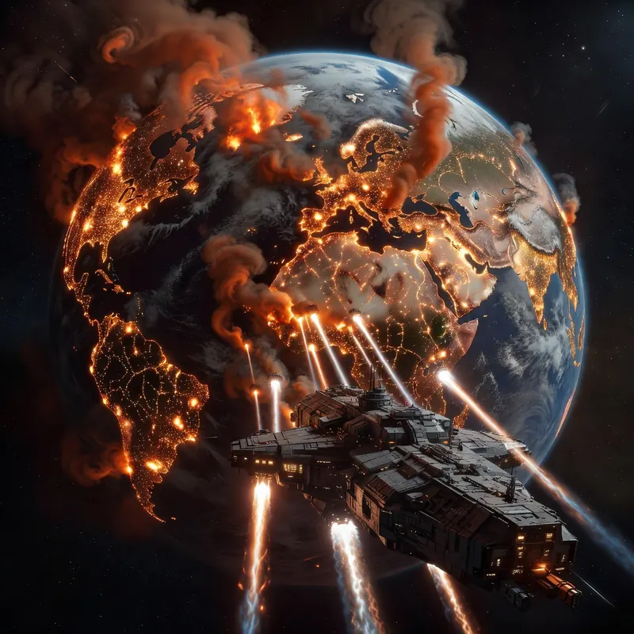

The Jihad: The War That Broke Everything Again
The Clan Invasion ended at the Great Refusal in 3060. The Inner Sphere had survived. The Clans were bound to halt their advance. Victor Steiner-Davion had destroyed Clan Smoke Jaguar and forced the remaining Clans to accept defeat. For the first time in decades, the future looked manageable.
Then the Word of Blake started killing planets.
Who Were the Word of Blake?
To understand the Jihad you need to understand ComStar's schism. ComStar had operated as humanity's interstellar communication monopoly since the early Succession Wars, accumulating wealth, hidden military power, and a quasi-religious mythology around the preservation of Star League technology. The organisation had a hidden inner circle — the First Circuit — that secretly manipulated Inner Sphere politics to ensure no single power became strong enough to challenge ComStar's monopoly.
Precentor Martial Anastasius Focht's use of ComStar's hidden Com Guards at Tukayyid broke that carefully maintained fiction. Suddenly the Inner Sphere knew ComStar had a substantial hidden military. What came next wasn't a factional split so much as a coup and its aftermath. Primus Myndo Waterly tried to use the chaos of the Clan Invasion to seize control of the Inner Sphere's HPG network outright, an operation history remembers as SCORPION. It failed, and Focht killed her for it, an execution ComStar's own records quietly filed as a cerebral hemorrhage.
It was only after Waterly's death that the actual schism happened. The First Circuit elected Sharilar Mori as the new Primus, and with Focht's backing she began secularising ComStar, stripping out the religious mysticism that had defined it for centuries. Precentor Demona Aziz of Atreus rejected that entirely. In protest, she left Terra with a cadre of followers who considered Focht's reforms heretical, and Captain-General Thomas Marik gave them a landhold on Gibson in the Free Worlds League in exchange for running the League's own HPG network. They took the name Word of Blake, and they took with them a more extreme version of ComStar's original theology: that the Star League was holy, that its restoration was sacred duty, and that anyone who stood in the way of that restoration was an enemy of humanity deserving destruction.
Terra wasn't handed to them. Six years later, in 3058, the Word of Blake seized it from ComStar outright, in Operation Odysseus, smuggling a vanguard force onto the planet disguised as mercenaries and using sympathisers already in place to delay word of the approaching Blakist fleet until it was too late. From there, they rebuilt. They fielded military forces nobody in the Inner Sphere fully understood. They waited nine more years.
The Precipitating Events (3062–3067)
The FedCom Civil War of 3062–3067 was the immediate context for the Jihad's beginning. Victor Steiner-Davion and his sister Katherine — who called herself Katrina — fought a civil war for control of the Federated Commonwealth that devastated both states and drew in multiple mercenary commands and Clan factions. The Inner Sphere was already weakened and distracted when the Word of Blake moved.
There is still historical debate about exactly when the Word of Blake decided the Jihad was inevitable versus when they decided to start it. What's clear is that by 3067 they had concluded that the reformed Second Star League — the successor organisation that had coordinated the Clan invasion response — was too dangerous to allow to continue. A unified Inner Sphere under Star League authority meant, eventually, a unified Inner Sphere that could challenge the Word of Blake's control of Terra and the HPG network.
The Word of Blake's solution was to destroy the Second Star League before it could consolidate power — and to do so in a way that shattered the political structures of every Great House simultaneously.
The Opening Strikes (3067–3068)
It didn't open as one cinematic strike. On 15 October 3067, "rogue" mercenaries backed by the Word of Blake hit Wolf's Dragoons on their own homeworld of Outreach, the first shot of the war dressed up as someone else's quarrel. Over the following weeks the pattern widened: Clan Snow Raven struck Antallos, the Luthien campaign opened, and on 5 December Blakist WarShips appeared over Tharkad and New Avalon simultaneously with an ultimatum, rejoin the Star League or face the consequences. Both nations refused. The WarShips opened fire and dropped ground troops the same day. New Avalon's own research institute was overrun by naval bombardment within the week, Northwind was blockaded ten days later, and by the end of the month Word of Blake WarShips had destroyed two of Wolf's Dragoons' own vessels at Outreach. It kept widening from there.
What made it so hard to counter wasn't a single knockout blow. It was that nobody had a framework for an enemy willing to escalate this fast, this widely, with a fleet the Inner Sphere had no idea existed. The Inner Sphere had known the Word of Blake existed and controlled Terra. Nobody had understood the scale of what they'd built, or how many fronts they were prepared to open at once.
The nuclear strikes were only the beginning. Following the opening attacks, Word of Blake forces — equipped with technology they had been secretly developing for fifteen years, including the Manei Domini cybernetically-enhanced super-soldiers and the Celestial series OmniMechs — began a systematic campaign of violence across the Inner Sphere that made the Succession Wars look restrained by comparison.
Shadow Divisions and Manei Domini
The Word of Blake fielded military forces that nobody had known existed. Their Shadow Divisions were complete military formations hidden from all intelligence assessments, equipped with advanced technology and ready to deploy on short notice across multiple theatres simultaneously.
The Manei Domini — the Blessed Order's cybernetically-enhanced warriors — were something genuinely new. Conventional 'Mech warriors enhanced with direct neural interfaces, cybernetic limb replacements, and physical modifications that made them faster, more resilient, and more capable than unmodified humans. The technology was derived from Clan enhancements but taken further. They were, in a specific sense, the Word of Blake's version of Clan warriors — true believers bred and modified for holy war.
The combination of Shadow Divisions and Manei Domini gave the Word of Blake military capacity far exceeding what any rational estimate would have predicted from an organisation that nominally operated a communication network. The Inner Sphere was fighting an enemy it hadn't known existed, in a war it hadn't expected, using weapons it hadn't prepared for.
The Course of the War (3068–3078)
The Jihad lasted a decade and the fighting was everywhere simultaneously. Unlike the Succession Wars, which had been fought over territorial objectives, or the Clan Invasion, which had followed clear invasion corridors, the Jihad was omnipresent and deliberately indiscriminate. The Word of Blake's strategy was to destroy the Inner Sphere's capacity to resist and its will to continue — which meant targeting civilian infrastructure, medical facilities, food production, and population centres as readily as military targets.
The Capellan Confederation, under Chancellor Sun-Tzu Liao, aligned with the Word of Blake early in the conflict — a political calculation that preserved Capellan territory at the cost of moral complicity in the atrocities. The Confederation used the chaos to reclaim some of the territory lost to Davion in the Fourth Succession War, which was the explicit quid pro quo.
The Lyran Alliance, its capital under Blakist occupation within weeks and its Archon in unclear condition, struggled to maintain coherent governance. The Federated Suns was already weakened by the Civil War. The Draconis Combine fought back hard but faced Blakist forces on multiple fronts. The Free Worlds League fractured as House Marik's internal divisions, always present, became impossible to manage under the pressure of the Jihad.
The Ghost Bear Dominion — the transformed Ghost Bear Clan, now settled in the former Rasalhague Republic — fought effectively against Blakist forces in their territory and eventually became one of the most committed members of the coalition against the Word of Blake. Their losses were significant; their response was total.
Devlin Stone and the Coalition
The figure who ultimately ended the Jihad is one of BattleTech's most controversial characters. Devlin Stone emerged from a Word of Blake reeducation camp on Kittery in March 3071 with a vision of a unified Inner Sphere that went beyond anything any Great House leader had proposed: a new political entity, the Republic of the Sphere, centred on Terra, that would supersede the Great Houses themselves in the most strategically vital region of human space.
Stone's genius was recognising that the Inner Sphere couldn't win the Jihad through the same fragmented, competitive approach that had defined its politics for three centuries. Each Great House fighting its own war against the Word of Blake, protecting its own territory and interests, would lose. A unified military coalition under unified command could win — if the political will existed to maintain it.
He built that coalition. The Stone Accords brought together Davion, Steiner, Kurita, the Ghost Bears, the Wolf-in-Exile, mercenary commands, and eventually most other significant military forces under a single operational command. The coalition had internal tensions — it always does — but it held together long enough.
The Liberation of Terra (3078–3079)
The final campaign of the Jihad was the assault on Terra itself — the Word of Blake's stronghold and the location of the HPG network's central hub. The Word of Blake had fortified Terra extensively and had no intention of surrendering it. They believed, genuinely, that they were fighting a holy war for humanity's salvation. Surrender wasn't in their doctrine.
The battle for Terra was brutal. The Word of Blake deployed everything they had, including weapons and tactics that crossed every line the Ares Conventions had tried to establish. The Coalition took enormous casualties. Individual cities became battlegrounds. The Manei Domini fought to the last.
Terra fell in 3079. The Word of Blake's central leadership was destroyed. Scattered Blakist forces continued fighting in various parts of the Inner Sphere for years afterward, but the organised military threat was ended.
The total death toll of the Jihad is estimated at several billion people across the Inner Sphere and Clan territories. The destruction of industrial and civilian infrastructure exceeded the First Succession War. For the second time in 300 years, humanity had managed to destroy a substantial portion of what it had built.
The Republic of the Sphere
Devlin Stone's Republic of the Sphere was established in 3081, centred on Terra and comprising 72 worlds in the most strategically vital region of human space — the area surrounding Terra that all the Great Houses needed access to. The Republic was explicitly designed to prevent any single power from controlling Terra and the HPG network.
Stone's political genius was the disarmament program. In exchange for joining the Republic, Great House members were expected to reduce their military forces and demilitarise their territories within the Republic zone. The logic: if everyone disarmed, nobody needed to maintain massive defensive forces out of fear of their neighbours. The peace dividend would allow the Republic to invest in recovery rather than ongoing militarisation.
It worked for about fifty years. The Republic era (3081–3130) was a genuine period of recovery and relative stability. Technology continued to advance. Population recovered. The wounds of the Jihad began to heal, incompletely but perceptibly.
Then the HPG network started failing, the Dark Age began, and everything fell apart again. But that, as they say, is another story.
Why the Jihad Matters
The Jihad is the most divisive era in BattleTech fandom. Some players find it too dark, too destructive of the universe they'd invested in. Some find it too contrived — an organisation nobody suspected of hiding Shadow Divisions and cybernetically enhanced Manei Domini for over a decade stretches plausibility in ways the more grounded earlier eras didn't.
I think it matters because it's honest about something the Star League era tried to paper over: that the same impulses that destroyed the Star League and started the Succession Wars didn't go away because the Clans showed up. The Inner Sphere got lucky at Tukayyid. It got organised enough to beat the Smoke Jaguars. Neither of those successes actually addressed the underlying problems — the inability of competing powers to maintain long-term cooperation, the tendency to build hidden military capacity as an insurance policy, the fragility of any peace that depends on continued mutual restraint.
The Word of Blake was ComStar's monster. ComStar created the conditions for the Jihad by building hidden power and cultivating true believers in a theology of violence. The lesson, if there is one, is that institutions built on secrecy and manipulation tend to produce, eventually, something like what the Word of Blake became. The Inner Sphere paid the price for ComStar's century of games.
Continue Reading: The Star League · The Succession Wars · The Clan Invasion · Lore Overview